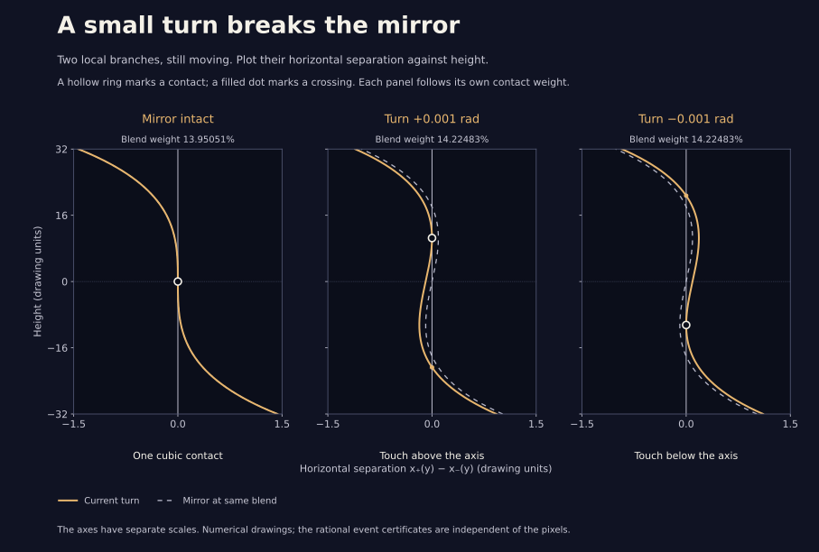

A small turn breaks the mirror
Two branches of a drawing can touch while both keep moving. In the arm detour, a mirror holds a special kind of contact on the horizontal axis. Turn the backward arms just a little: the contact moves off the axis, and its two branches begin to separate in a different way.
One milliradian is about 0.057°. Zero restores the mirror. Turning the other way reflects the contact.
Two meetings in the window: one crossing and one touch away from the axis.
Contact weight
Contact height units

What does the mirror hold in place?
With the mirror intact, a meeting stays on the axis throughout this little part of the blend. At the special contact weight, the two branches share both slope and curvature. Their first different term is cubic in height. Just after it, two extra nearby crossings appear, one above the axis and one below.
The small turn breaks this constraint. One meeting persists while another two are born together at a quadratic touch away from the axis. The touch moves upward for a positive turn and downward for a negative one. Select “Just before,” “At contact,” and “Just after” to see one, two, and three meetings in the window. At zero turn the middle picture has one cubic contact.
The dashed graph restores the mirror at the same blend weight. It does not follow its contact as you move the sliders. Its agreement or disagreement with the gold graph shows what the small turn changes.
Why can a small turn make a visible difference?
Call the turn φ. Close to the mirror contact, the separation has leading terms 2 A′ (a − a₀) y + 2 C y³ + B φ, where y is height and a is blend weight. All three coefficients are nonzero. A small constant shift of a cubic can move a double meeting a surprisingly long way.
As the turn tends to zero, the contact height scales like its signed cube root. The change in contact weight scales like |φ|2/3. Reducing the turn eightfold therefore roughly halves the height and quarters the weight shift. These are local limiting laws; the picture calculates the actual branches numerically.
The first arm stays at 300 throughout this study. Both backward-frequency terms receive the same phase, leaving every curve closed. The tracing point keeps moving: the earlier speed bound and a triangle inequality give speed greater than 0.285 on both complete detours whenever the turn is at most one milliradian. The direction’s net turn remains zero, and the curve winds once around the center.
Controls, approximations, and the proof
Nothing animates. Changing the turn keeps your current blend weight; “At contact” finds the new contact. “Restore the mirror” returns to zero turn at its cubic contact. For the blend slider, arrow keys change the weight by 0.01 percentage points; Shift makes the change ten times smaller. Page Up and Page Down change it by 0.1 percentage points. Home and End visit the ends of the displayed interval. The turn slider uses its native arrow-key steps.
The graph follows two local branches within 32 drawing units of the horizontal axis. Its meeting markers and readouts are numerical approximations. They count only those selected branches in this window. Other branches of the complete orbit can meet elsewhere.
The mathematical note proves the local scaling law and explains rational contraction boxes that certify a quadratic tangency at six specified nonzero turns. This does not classify every event of every perturbed curve. A standalone SVG preserves three stills without JavaScript.